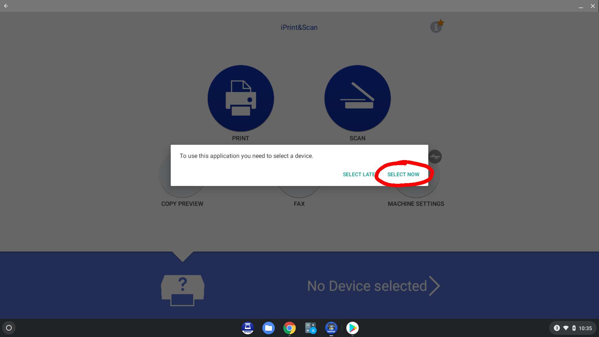

We have two scanners and two routers for District 22. Each scanner is set to connect to one of the routers automatically; there is a label on the scanner that has the name of the router it will connect to. To scan, your chromebook must be connected to the same router as the scanner you're going to use.
If the scanner application is already installed, click on the Brother scanner app in the dock (not the Epson scanner app), and continue below. If the scanner application is not already installed on the chromebook, do the following. Start by clicking on the Launcher icon at the lower left. You should see a "Play Store" button; click on it. If you don't see it, click the up-arrow button "^", and choose Play Store from there.
If this is the first time Play Store has been started, it may take a few minutes before it comes up; eventually you will see a screen like that below, which should show some apps being installed, including Brother iPrint&Scan and Adobe Reader. Wait until they have both been installed.
The scanner app should appear on the dock at the bottom of the screen. If not, you can open the launcher again and start it from there, or better yet, drag it from the launcher to the dock so it will be there the next time you need it. Start the app.
Assuming this is the first time the scanner app has run, you will see a terms screen; scroll to the bottom and click "Yes".
Again, if this is the first time the app has run, you will need to tell it what scanner to use. Click "Select Now".
Click "Set manually" in the upper right corner.
Type in 10.0.0.4 for the IP Adress and press return. If the scanner is on and your chromebook is connected to the same router as the scanner, you should see it show up as ADS-1700W, as shown. Click on the image of the scanner.
After a few seconds you should see the screen below. (You may also be sent to a Brother page in the browser. You can just close the tab and shrink the browser.) To scan, click on the large blue Scan icon.
Here you can turn 2-sided scanning on if required. Make sure your document is ready to scan (check that at the upper left of the small screen on the scanner it says "ADF Ready"--if not, you may have to remove and reinsert the document). The document should be loaded face down, with the top of the page going into the scanner first; the scanner is rated to do a stack of 20 sheets. To scan, click the green Scan bar at the bottom of the screen. (The scanner should start almost immediately; if it takes a long time to scan, it means your chromebook was set up with the the other scanner. To reconfigure the app to use the current scanner, get back to the main screen and click on ADS-1700W. This should put you back at the Select Device screen; click on "Set Manually". On the next screen, make sure the IP number 10.0.0.4 is filled in and click on the image of the scanner. Then resume scanning.)
If you've finished scanning, click "Done", otherwise click "Scan" to continue scanning (after loading the next document).

Now you should see images of the pages that have been scanned. If you like, you can click on the pencil icon at the upper right, which will let you rotate and crop the scan. Do not click the green Save bar at the bottom of the screen. Click the "share" icon at the bottom right, just above the green bar. (If you forget and click the green save bar, here's how to fix it.
Click on "Share as PDF".
Click "Save to Files".
This should put you in the Downloads folder where you may see a "TSO Scans" folder; open the "TSO Scans" folder. If it has not been created yet, you can do it from the scanner app: click on the three-dot menu at the upper right, and create the folder "TSO Scans". Change the name of the file (bottom left) and then click the blue Save button at the bottom right.
The files should be named using this template: Lastname_Firstname_mmddyyyy.pdf, where mmddyyy is the date on which the scan was performed. If there will be more than one file for the same name, use Lastname_Firstname_mmddyyyy_n.pdf, where n is the number of the scan in sequence, so Lastname_Firstname_mmddyyyy_1.pdf, Lastname_Firstname_mmddyyyy_2.pdf, and so on.